Contents
- 21. Mixed integer/discrete problems
- 22. Understanding how they work
- 23. Wrapping an optimizer around quad
- 24. Graphical tools for understanding sets of nonlinear equations
- 25. Optimizing non-smooth or stochastic functions
- 26. Linear equality constraints
- 27. Sums of squares surfaces and the geometry of a regression
- 28. Confidence limits on a regression model
- 29. Confidence limits on the parameters in a nonlinear regression
- 30. Quadprog example, unrounding a curve
- 31. R^2
- 32. Estimation of the parameters of an implicit function
- 33. Robust fitting schemes
- 34. Homotopies
- 35. Orthogonal polynomial regression
- 36. Potential topics to be added or expanded in the (near) future
21. Mixed integer/discrete problems
%{ Many problems are inherently discrete. I won't get into that class of problems at all. However there are also problems of mixed class. Here one or more of the variables in the optimization are limited to a discrete set of values, while the rest live in a continuous domain. There are mixed solvers available, both on Matlab central and from other sources. What do you do when there are only a few possible discrete states to investigate? Probably best here is to simply fix the discrete variables at each possible state, then solve for the continuous variables. Then choose the solution which is best overall. %}
22. Understanding how they work
%{ While I will not even try to give a full description of how any optimizer works, a little bit of understanding is worth a tremendous amount when there are problems. True understanding can only come from study in some depth of an algorithm. I can't offer that here. Instead, I'll try to show the broad differences between some of the methods, and suggest when one might use one method over another. Previously in this text I've referred to optimizers as tools that operate on a black box, or compared them to a blindfolded individual on a hillside. These are useful analogies but these analogies don't really tell enough to visualize how the tools work. We'll start talking about the method used in fminsearch, since it may well be one of the tools which is used most often. Fminsearch is a Nelder/Mead polytope algorithm. Some call it a simplex method, but this may confuse things with linear programming. It works by evaluating the objective function over a polytope of points in the parameter space. In 2-dimensions, this will be a triangle, in n-dimensions, the polytope (or simplex) will be composed of n+1 points. The basic algorithm is simple. Compare these n+1 points, and choose the WORST one to delete. Replace this bad point with its reflection through the remaining points in the polytope. You can visualize this method as flopping a triangle around the parameter space until it finds the optimum. Where appropriate, the polytope can shrink or grow in size. I'll note that this basic Nelder/Mead code is simple, it requires no gradient information at all, and can even survive an occasional slope or function discontinuity. The downside of a polytope method is how slowly it will converge, especially for higher dimensional problems. I will happily use fminsearch for 2 or 3 variable problems, especially if its something I will need to use infrequently. I will rarely if ever consider fminsearch for more than 5 or 6 variables. (Feel free to disagree. You may have more patience than I do.) The other point to remember about a polytope method is the stopping criterion. These methods are generally allowed to terminate when all the function values over the polytope have the same value within the function tolerance. (I have also seen the standard deviation of the function values over the polytope used to compare to the function tolerance.) We can contrast the polytope algorithm to the more traditional Newton-like family of methods, combined with a line search. These methods include many of the optimizers in the optimization toolbox, such as fminunc, lsqcurvefit, fsolve, etc. Whereas a polytope method lays down a polytope on the objective function surface, then moves the polytope around, these line-search methods attempt to be more intelligent in their operation. The basic idea is to form a locally linear approximation to the problem at hand, then solve the linearized problem exactly. This determines a direction to search along, plus a predicted step length in that direction from your current point in the parameter space. (I already discussed line searches in section 9.) This is why these tools require a gradient (or Jacobian as appropriate) of the objective. This derivative information is used to compute the necessary locally linear approximation. The other feature of interest about these methods is how they "learn" about the surface in question. The very first iteration taken might typically be a steepest descent step. After the first iteration, the optimizer can gradually form an adaptive approximation to the local Hessian matrix of the objective. This, in effect tells the optimizer what the local curvature of the surface looks like. %}
% As a comparison, we wll look again to the Rosenbrock function. rosen = @(X) (1-X(:,1)).^2 + 105*(X(:,2)-X(:,1).^2).^2; % first, generate a contour surface [xc,yc] = meshgrid(-7:.05:7); zc = rosen([xc(:),yc(:)]); zc = reshape(zc,size(xc)); close all contour(xc,yc,zc,[.1 1 4 16 64 256 1024 4096]) hold on % now do an optimization using optimplot to plot the points opts = optimset('fminsearch'); opts.OutputFcn = @optimplot; opts.Display = 'iter'; Xfinal = fminsearch(rosen,[-6,4],opts); hold off
Iteration Func-count min f(x) Procedure
0 1 107569
1 3 106229 initial simplex
2 5 64933 expand
3 7 47495.9 expand
4 9 8316.27 expand
5 11 14.827 expand
6 12 14.827 reflect
7 14 14.827 contract outside
8 15 14.827 reflect
9 17 14.827 contract inside
10 19 14.827 contract inside
11 21 14.827 contract inside
12 23 14.827 contract inside
13 25 13.3766 contract inside
14 27 13.3766 contract outside
15 29 13.2374 contract inside
16 31 12.2925 contract inside
17 32 12.2925 reflect
18 34 12.2925 contract inside
19 35 12.2925 reflect
20 37 12.1368 reflect
21 39 12.1368 contract inside
22 41 12.1089 reflect
23 43 11.9454 expand
24 44 11.9454 reflect
25 46 11.6336 expand
26 48 11.6336 contract inside
27 50 11.2998 expand
28 52 10.6863 expand
29 54 10.5337 reflect
30 56 10.0554 reflect
31 58 10.0554 contract outside
32 59 10.0554 reflect
33 61 9.76997 expand
34 63 9.61505 reflect
35 65 9.40149 reflect
36 67 9.26023 reflect
37 69 9.11711 reflect
38 71 8.95308 reflect
39 73 8.91547 reflect
40 75 8.66816 reflect
41 76 8.66816 reflect
42 78 8.39252 reflect
43 80 8.39252 contract inside
44 82 8.21847 reflect
45 84 8.09736 expand
46 86 7.85642 reflect
47 88 7.82387 reflect
48 90 7.56067 reflect
49 92 7.53984 reflect
50 94 7.33096 reflect
51 96 7.23436 reflect
52 98 7.18835 reflect
53 100 6.91787 reflect
54 101 6.91787 reflect
55 103 6.62211 reflect
56 105 6.62211 contract inside
57 106 6.62211 reflect
58 108 6.24375 expand
59 110 6.24375 contract outside
60 112 5.79141 expand
61 113 5.79141 reflect
62 114 5.79141 reflect
63 116 5.26172 expand
64 118 5.26172 contract inside
65 119 5.26172 reflect
66 121 4.72598 expand
67 122 4.72598 reflect
68 124 4.33559 reflect
69 126 4.33559 contract inside
70 128 4.20536 expand
71 130 3.82246 reflect
72 131 3.82246 reflect
73 133 3.51331 reflect
74 135 3.51331 contract inside
75 137 3.02302 expand
76 139 3.02302 contract outside
77 141 2.87735 reflect
78 143 2.58927 expand
79 145 2.45041 reflect
80 147 2.04863 expand
81 148 2.04863 reflect
82 150 1.61187 reflect
83 152 1.61187 contract inside
84 154 1.61187 contract inside
85 156 1.48396 expand
86 158 1.4459 reflect
87 160 1.03131 expand
88 162 1.03131 contract inside
89 164 1.03131 contract inside
90 166 0.974839 reflect
91 168 0.705661 expand
92 170 0.705661 contract inside
93 172 0.513416 expand
94 174 0.513416 contract inside
95 176 0.513416 contract inside
96 178 0.441239 expand
97 180 0.368244 reflect
98 182 0.269222 reflect
99 184 0.269222 contract inside
100 185 0.269222 reflect
101 187 0.203559 expand
102 189 0.203559 contract inside
103 191 0.144846 expand
104 193 0.144846 contract inside
105 195 0.116851 reflect
106 197 0.113667 contract outside
107 199 0.103285 reflect
108 201 0.0928786 reflect
109 203 0.0924152 reflect
110 205 0.0809806 reflect
111 207 0.0803195 reflect
112 209 0.0786183 reflect
113 211 0.0652235 reflect
114 213 0.053865 contract inside
115 215 0.0444289 contract inside
116 217 0.0444289 contract outside
117 219 0.0444289 contract inside
118 221 0.043266 reflect
119 223 0.0392403 expand
120 225 0.032624 expand
121 227 0.0314681 reflect
122 229 0.0197101 expand
123 230 0.0197101 reflect
124 232 0.00476666 expand
125 234 0.00476666 contract inside
126 235 0.00476666 reflect
127 237 0.00226376 contract outside
128 239 0.00226376 contract inside
129 241 0.00206127 contract inside
130 243 0.000564745 expand
131 245 0.000564745 contract inside
132 247 0.000333362 reflect
133 249 5.55511e-05 reflect
134 251 5.55511e-05 contract inside
135 253 5.55511e-05 contract inside
136 255 9.78395e-06 contract outside
137 257 3.98836e-06 contract inside
138 259 3.98836e-06 contract inside
139 261 1.44256e-06 contract inside
140 263 1.44256e-06 contract inside
141 265 4.10959e-07 contract inside
142 267 3.83611e-07 contract outside
143 269 2.83319e-07 contract inside
144 271 1.18721e-08 contract inside
145 272 1.18721e-08 reflect
146 274 1.18721e-08 contract inside
147 276 1.18721e-08 contract outside
148 278 1.18721e-08 contract inside
149 279 1.18721e-08 reflect
150 281 1.02367e-09 contract inside
151 283 1.02367e-09 contract inside
152 285 1.02367e-09 contract inside
153 287 7.0779e-10 contract inside
Optimization terminated:
the current x satisfies the termination criteria using OPTIONS.TolX of 1.000000e-04
and F(X) satisfies the convergence criteria using OPTIONS.TolFun of 1.000000e-04
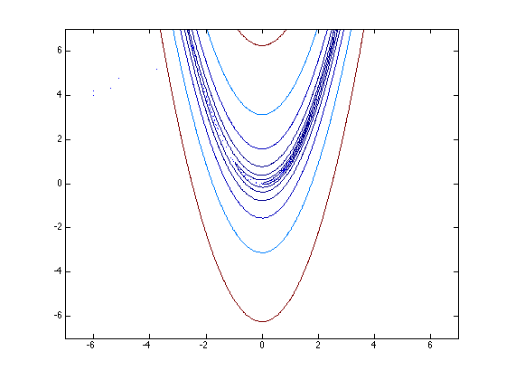 % try the same optimization using fminunc close contour(xc,yc,zc,[.1 1 4 16 64 256 1024 4096]) hold on % now do an optimization using optimplot to plot the points opts = optimset('fminunc'); opts.OutputFcn = @optimplot; opts.Display = 'iter'; Xfinal = fminunc(rosen,[-6,4],opts); hold off % Note the difference between these two optimizers. Its most obvious % at the start, when fminsearch started out with a relatively large % simplex, which more slowly flopped down to the valley than did % fminunc. Fminsearch also clearly overshoots the valley at first, % then recovers. Also note that when it did hit the bottom of the % valley, fminunc was able to take at least a few large initial steps, % until the valley became too curved and too flat that it also was % forced into short steps too.
Warning: Gradient must be provided for trust-region algorithm;
using line-search algorithm instead.
First-order
Iteration Func-count f(x) Step-size optimality
0 3 107569 8.07e+04
1 6 45974.3 1.23986e-05 4.39e+04
2 9 11015.9 1 1.64e+04
3 12 2872.55 1 6.78e+03
4 15 545.508 1 2.45e+03
5 18 76.3242 1 767
6 21 13.1998 1 165
7 24 9.78412 1 17.2
8 27 9.74641 1 1.3
9 30 9.74633 1 1.41
10 33 9.74619 1 1.52
11 36 9.74575 1 1.73
12 39 9.74467 1 2.49
13 42 9.74176 1 4.77
14 45 9.7342 1 8.42
15 48 9.71404 1 14.4
16 51 9.65803 1 24
17 63 6.76739 8.23959 30.1
18 66 6.72388 1 33.9
19 72 5.66717 0.618987 36.8
First-order
Iteration Func-count f(x) Step-size optimality
20 75 4.94821 1 3.44
21 81 4.41754 0.466188 24.2
22 84 4.09044 1 23.4
23 87 3.28576 1 3.04
24 93 2.92246 0.328954 16.2
25 96 2.71943 1 8.51
26 99 2.26164 1 7.63
27 105 2.02684 0.637532 9.11
28 108 1.59953 1 4.58
29 111 1.43559 1 10.1
30 114 1.00187 1 2
31 120 0.859627 0.457736 5.31
32 123 0.752733 1 5.48
33 126 0.518895 1 1.8
34 132 0.433292 0.34288 4.64
35 135 0.368255 1 3.2
36 138 0.281549 1 5.63
37 141 0.177695 1 4.1
38 147 0.100968 0.66976 1.83
39 150 0.0904364 1 4.29
First-order
Iteration Func-count f(x) Step-size optimality
40 153 0.0591176 1 2.03
41 156 0.0319392 1 2.46
42 159 0.0145993 1 0.514
43 165 0.00767812 0.468712 1.61
44 168 0.00407101 1 1.23
45 171 0.00108063 1 0.24
46 177 0.000284661 0.5 0.388
47 180 5.52572e-05 1 0.217
48 183 2.34894e-06 1 0.0182
Local minimum found.
Optimization completed because the size of the gradient is less than
the selected value of the function tolerance.
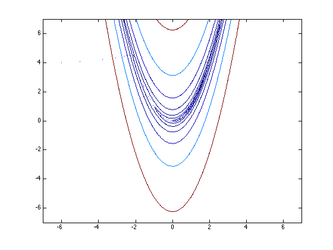 23. Wrapping an optimizer around quad
%{ Nested optimizations or nesting an integration inside an optimization are similar problems. Both really just a problem of managing parameter spaces. I.e., you must ensure that each objective function or integrand sees the appropriate set of parameters. In this example, I'll formulate an optimization which has an integration at its heart. %}
% Choose some simple function to integrate. % % z = (coef(1)^2)*x^2 + (coef(2)^2)*x^4 % % I picked this one since its integral over the % interval [-1 1] is clearly minimized at coef = [0,0]. K = @(x,coef) coef(1).^2*x.^2 + coef(2).^2*x.^4; % As far as the integration is concerned, coef is a constant % vector. It is invariant. And the optimization really does % not want to understand what x is, as far as the optimizer % is concerned, its objective is a function of only the % parameters in coef. % We can integrate K easily enough (for a given set of % coefficients (coef) via coef = [2 3]; quad(K,-1,1,1e-13,[],coef) % We could also have embedded coef directly into the % anonymous function K, as I do below.
ans =
6.2667
% As always, I like to make sure that any objective function % produces results that I'd expect. Here we know what to % expect, but it never hurts to test our knowledge. I'll % change the function K this time to embed coef inside it. % If we try it at [0 0], we see the expected result, i.e., 0. coef = [0 0]; K = @(x) coef(1).^2*x.^2 + coef(2).^2*x.^4; quad(K,-1,1,1e-13)
ans =
0
% I used a tight integration tolerance because we will % put this inside an optimizer, and we want to minimize % any later problems with the gradient estimation. % Now, can we minimize this integral? Thats easy enough. % Here is an objective function, to be used with a % minimizer. As far as the optimizer is concerned, obj is % a function only of coef. obj = @(coef) quad(@(x) coef(1).^2*x.^2+coef(2).^2*x.^4,-1,1,1e-13); % Call fminsearch, or fminunc fminsearch(obj,[2 3],optimset('disp','iter'))
Iteration Func-count min f(x) Procedure
0 1 6.26667
1 3 6.26667 initial simplex
2 5 5.99767 expand
3 7 5.33475 expand
4 9 4.81885 expand
5 11 3.64071 expand
6 12 3.64071 reflect
7 14 3.33985 reflect
8 16 2.3508 expand
9 17 2.3508 reflect
10 19 0.853714 expand
11 20 0.853714 reflect
12 22 0.313741 reflect
13 24 0.251397 reflect
14 26 0.0928385 reflect
15 28 0.060519 contract inside
16 30 0.0323352 contract inside
17 32 0.0106107 contract inside
18 34 0.0106107 contract outside
19 36 0.00612859 contract inside
20 38 0.00203893 contract inside
21 40 0.000622543 contract inside
22 42 0.000622543 contract inside
23 43 0.000622543 reflect
24 45 0.000117795 contract inside
25 47 0.000117795 contract outside
26 49 0.000117795 contract inside
27 51 3.8102e-05 contract outside
28 53 5.70458e-06 contract inside
29 55 5.70458e-06 contract inside
30 56 5.70458e-06 reflect
31 58 5.62239e-06 contract inside
32 60 1.09586e-06 contract inside
33 62 3.15652e-07 contract inside
34 64 3.15652e-07 contract inside
35 66 2.43437e-07 contract inside
36 68 2.43437e-07 contract inside
37 70 1.43495e-08 contract inside
38 71 1.43495e-08 reflect
39 73 1.43495e-08 contract inside
40 75 1.43495e-08 contract outside
41 77 1.43495e-08 contract inside
42 79 6.72372e-09 reflect
43 81 1.12931e-09 contract inside
44 83 1.12931e-09 contract inside
45 85 1.12931e-09 contract inside
Optimization terminated:
the current x satisfies the termination criteria using OPTIONS.TolX of 1.000000e-04
and F(X) satisfies the convergence criteria using OPTIONS.TolFun of 1.000000e-04
ans =
7.0654e-06 -5.2346e-05
% or fminunc(obj,[2 3],optimset('disp','iter','largescale','off')) % Both will return a solution near [0 0].
First-order
Iteration Func-count f(x) Step-size optimality
0 3 6.26667 2.67
1 6 2.43067 0.375 1.68
2 9 0.00982186 1 0.103
3 12 0.000170606 1 0.0175
4 15 1.21843e-08 1 0.000153
5 18 3.47601e-12 1 1.93e-06
Local minimum found.
Optimization completed because the size of the gradient is less than
the default value of the function tolerance.
ans =
-1.3221e-06 -2.4035e-06
24. Graphical tools for understanding sets of nonlinear equations
%{ Pick some simple set of nonlinear equations. Perhaps this pair will do as well as any others. x*y^3 = 2 y-x^2 = 1 We will look for solutions in the first quadrant of the x-y plane, so x>=0 and y>=0. %}
% Now consider each equation independently from the other. In the x-y % plane, these equations can be thought of as implicit functions, thus % ezplot can come to our rescue. close all ezplot('x*y.^3 - 2',[0 5]) hold on ezplot('y - x.^2 - 1',[0 5]) hold off grid on title 'Graphical (ezplot) solution to a nonlinear system of equations' xlabel 'x' ylabel 'y' % The intersection of the two curves is our solution, zooming in % will find it quite nicely.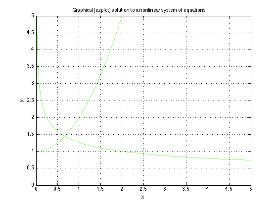
% An alternative approach is to think of the problem in terms of % level sets. Given a function of several variables, z(x,y), a % level set of that function is the set of (x,y) pairs such that % z is constant at a given level. % In Matlab, there is a nice tool for viewing level sets: contour. % See how it allows us to solve our system of equations graphically. % Form a lattice over the region of interest in the x-y plane [x,y] = meshgrid(0:.1:5); % Build our functions on that lattice. Be careful to use .*, .^ and % ./ as appropriate. z1 = x.*y.^3; z2 = y - x.^2; % Display the level sets contour(x,y,z1,[2 2],'r') hold on contour(x,y,z2,[1 1],'g') hold off grid on title 'Graphical (contour) solution to a nonlinear system of equations' xlabel 'x' ylabel 'y'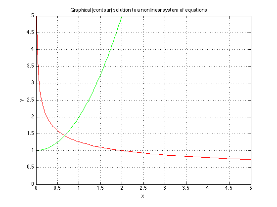
25. Optimizing non-smooth or stochastic functions
%{ A property of the tools in the optimization toolbox is they all assume that their objective function is a continuous, differentiable function of its parameters. (With the exception of bintprog.) If your function does not have this property, then look elsewhere for optimization. One place might be the Genetic Algorithms and Direct Search toolbox. http://www.mathworks.com/products/gads/description4.html Simulated annealing is another tool for these problems. You will find a few options on the file exchange. %}
26. Linear equality constraints
%{ This section is designed to help the reader understand how one solves linear least squares problems subject to linear equality constraints. Its written for the reader who wants to understand how to solve this problem in terms of liner algebra. (Some may ask where do these problems arise: i.e., linear least squares with many variables and possibly many linear constraints. Spline models are a common example, functions of one or several dimensions. Under some circumstances there may also be linear inequality constraints.) We'll start off with a simple example. Assume a model of y = a + b*x1 + c*x2 with the simple equality constraint c - b = 1 How would we solve this problem on paper? (Yes, lsqlin solves these problems in its sleep. We'll do it the hard way instead.) Simplest is to eliminate one of the unknowns using the constraint. Replace c with 1+b in the model. c = 1 + b So y = a + b*x1 + (1+b)*x2 Rearrange terms to get this (y - x2) = a + b*(x1+x2) Estimate the unknowns (a,b), then recover c once b is known. A point to note is I suggested we eliminate C in the model. As easily, we could have eliminated b, but we could not have ch0osen to eliminate a, because a did not enter into our constraint at all. Another thing to think about is if the constraint had some coefficients with values very near zero. Elinimation of those variables would then cause significant instabilities in the computations. Its similar to the reason why pivoting is useful in the solution of systems of equations. Lets try it on some data: %}
n = 500; x1 = rand(n,1); x2 = rand(n,1); % yes, I know that these coefficients do not actually satisfy the % constraint above. They are close though. y = 1 + 2*x1 + pi*x2 + randn(n,1)/5; % solve the reduced problem above ab = [ones(n,1), x1+x2]\(y - x2) % recover c c = 1 + ab(2) % Note that the coefficients were originally (1,2,pi) but % application of the constraint c - b = 1
ab =
1.0299
2.0538
c =
3.0538
% Had we never applied any constraint, the (1,2,pi) values will be % closer than for the constrained solution. This is easy to verify. [ones(n,1),x1,x2]\y
ans =
1.031
1.998
3.1086
% We may use lsqlin to verify our constrained solution lsqlin([ones(n,1),x1,x2],y,[],[],[0 -1 1],1,[],[],[],optimset('largescale','off')) % As expected, the two constrained solutions agree.
Optimization terminated.
ans =
1.0299
2.0538
3.0538
% The real question in this section is not how to solve a linearly % constrained problem, but how to solve it programmatically, and % how to solve it for possibly multiple constraints. % Start with a completely random least squares problem. n = 20; % number of data points p = 7; % number of parameters to estimate A = rand(n,p); % Even generate random coefficients for our ground truth. coef0 = 1 + randn(p,1) y = A*coef0 + randn(n,1); % Finally, choose some totally random constraints m = 3; % The number of constraints in the model C = randn(m,p); D = C*coef0;
coef0 =
1.5265
1.2648
0.6064
-1.1763
-0.19565
1.3653
3.4124
% Again, compute the simple (unconstrained) linear regression % estimates for this model coef1 = A\y % verify that the unconstrained model fails to satisfy the % constraints, but that the original (ground truth) coefficients % do satisfy them. D-C*coef should be zero. [D-C*coef0,D-C*coef1]
coef1 =
2.1219
1.5324
1.1234
-1.3154
-0.44901
0.9672
3.146
ans =
0 1.2682
0 0.71119
0 -0.79643
% How does one solve the constrained problem? There are at least % two ways to do so (if we choose not to resort to lsqlin.) For % those devotees of pinv and the singular value distribution, % one such approach would involve a splitting of the solution to % A*x = y into two components: x = x_u + x_c. Here x_c must lie % in the row space of the matrix C, while x_u lies in its null % space. The only flaw with this approach is it will fail for % sparse constraint matrices, since it would rely on the singular % value decomposition. % % I'll discuss an approach that is based on the qr factorization % of our constraint matrix C. It is also nicely numerically stable, % and it offers the potential for use on large sparse constraint % matrices. [Q,R,E]= qr(C,0) % First, we will ignore the case where C is rank deficient (high % quality numerical code would not ignore that case, and the QR % allows us to identify and deal with that event. It is merely a % distraction in this discussion however.) % % We transform the constraint system C*x = D by left multiplying % by the inverse of Q, i.e., its transpose. Thus, with the pivoting % applied to x, the constraints become % % R*x(E) = Q'*D % % In effect, we wanted to compute the Q-less QR factorization, % with pivoting. % % Why did we need pivoting? As I suggested above, numerical % instabilities may result otherwise. % % We will reduce the constraints further by splitting it into % two fragments. Assuming that C had fewer rows than columns, % then R can be broken into two pieces: % % R = [R_c, R_u] R_c = R(:,1:m); R_u = R(:,(m+1):end); % Here R_c is an mxm, upper triangular matrix, with non-zero % diagonals. The non-zero diagonals are ensured by the use of % pivoting. In effect, column pivoting provides the means by % which we choose those variables to eliminate from the regression % model. % % The pivoting operation has effectively split x into two pieces % x_c and x_u. The variables x_c will correspond to the first m % pivots identified in the vector E. % % This split can be mirrored by breaking the matrices into pieces % % R_c*x_c + R_u*X_u = Q'*D % % We will use this version of our constraint system to eliminate % the variables x_c from the least squares problem. Break A into % pieces also, mirroring the qr pivoting: A_c = A(:,E(1:m)); A_u = A(:,E((m+1):end));
Q =
-0.98321 -0.016087 0.18176
-0.060225 -0.91167 -0.40648
0.17224 -0.41061 0.8954
R =
-2.7802 -0.046903 0.73714 1.2246 1.3801 -1.0497 0.47134
0 -1.9613 -0.049143 1.1401 -0.9851 0.71091 -0.9255
0 0 1.5486 -0.1896 -0.39366 0.7966 -1.1307
E =
4 2 3 1 5 6 7
% So the least squares problem, split in terms of the variable % as we have reordered them is: % % A_c*x_c + A_u*x_u = y % % We can now eliminate the appropriate variables from the linear % least squares. % % A_c*inv(R_c)*(Q'*D - R_u*x_u) + A_u*x_u = y % % Expand and combine terms. Remember, we will not use inv() % in the actual code, but instead use \. The \ operator, when % applied to an upper triangular matrix, is very efficient % compared to inv(). % % (A_u - A_c*R_c\R_u) * x_u = y - A-c*R_c\(Q'*D) x_u = (A_u - A_c*(R_c\R_u)) \ (y - A_c*(R_c\(Q'*D)))
x_u =
2.0465
-0.65201
0.97862
3.3565
% Finally, we recover x_c from the constraint equations
x_c = R_c\(Q'*D - R_u*x_u)
x_c =
-1.0162
1.6799
0.71218
% And we put it all together in the unpivoted solution vector x:
xfinal = zeros(p,1);
xfinal(E(1:m)) = x_c;
xfinal(E((m+1):end)) = x_u
xfinal =
2.0465
1.6799
0.71218
-1.0162
-0.65201
0.97862
3.3565
% Were we successful? How does this result compare to lsqlin? % The two are identical (as usual, only to within floating % point precision irregularities.) lsqlin(A,y,[],[],C,D,[],[],[],optimset('largescale','off'))
Optimization terminated.
ans =
2.0465
1.6799
0.71218
-1.0162
-0.65201
0.97862
3.3565
% Verify that the equality constraints are satisfied to within % floating point tolerances. C*xfinal - D
ans = 3.5527e-15 -1.3323e-15 -8.8818e-16
27. Sums of squares surfaces and the geometry of a regression
%{ I'll admit in advance that this section has no tips or tricks to look for. But it does have some pretty pictures, and I hope it leads into the next two sections, where I talk about confidence limits and error estimates for parameters. Consider the very simple (linear) regression model: y = a0 + a1*x + error. The sum of squares surface as a function of the parameters (a0,a1) will have ellipsoidal contours. Theory tells us this, but its always nice to back up theory with an example. Then I'll look at what happens in a nonlinear regression. %}
% A simple linear model n = 20; x = randn(n,1); y = 1 + x + randn(n,1); close figure plot(x,y,'o') title 'Linear data with noise' xlabel 'x' ylabel 'y'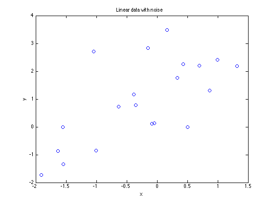
% linear regression estimates M = [ones(n,1),x]; a0a1 = M\y % look at various possible values for a0 & a1 v = -1:.1:3; nv = length(v); [a0,a1] = meshgrid(v); a0=a0(:)'; a1=a1(:)'; m = length(a0); SS = sum(((ones(n,1)*a0 + x*a1) - repmat(y,1,m)).^2,1); SS = reshape(SS,nv,nv); surf(v,v,SS) title 'Sum of squares error surface' xlabel 'a0' ylabel 'a1' figure contour(v,v,SS) hold on plot(a0a1(1),a0a1(2),'rx') plot([[-1;3],[1;1]],[[1;1],[-1;3]],'g-') hold off title 'Linear model: Sum of squares (elliptical) error contours' xlabel 'a0' ylabel 'a1' axis equal axis square grid on % Note: the min SSE will occur roughly at (1,1), as indicated % by the green crossed lines. The linear regression estimates % are marked by the 'x'. % As predicted, the contours are elliptical.
a0a1 =
1.226
1.0546
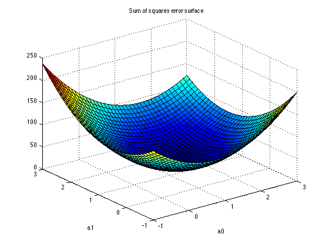 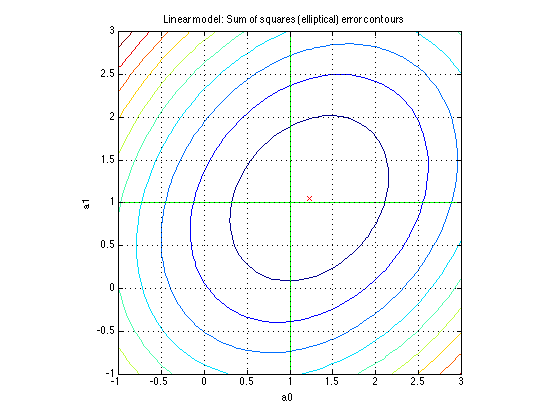 % next, we will do the same analysis for a nonlinear model % with two parameters: % % y = a0*exp(a1*x.^2) + error % % First, we will look at the error surface % A simple nonlinear model n = 20; x = linspace(-1.5,1.5,n)'; y = 1*exp(1*x.^2) + randn(n,1); figure plot(x,y,'o') title 'Nonlinear data with noise' xlabel 'x' ylabel 'y'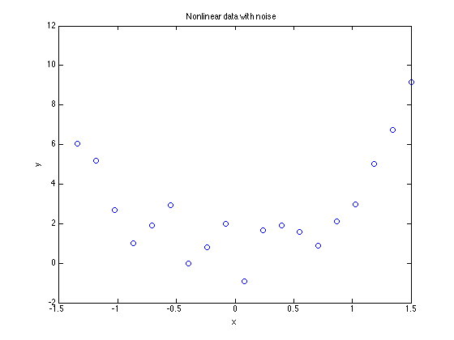
% Nonlinear regression estimates. Use pleas for this one.
a1_start = 2;
[a1,a0] = pleas({@(a1,xdata) exp(a1*xdata.^2)},a1_start,x,y)
a0a1 = [a0,a1];
Local minimum found.
Optimization completed because the size of the gradient is less than
the selected value of the function tolerance.
a1 =
2.2397e-07
a0 =
3.1861
% look at various possible values for a0 & a1 v = .5:.01:1.5; nv = length(v); [a0,a1] = meshgrid(v); a0=a0(:)'; a1=a1(:)'; m = length(a0); SS = sum((((ones(n,1)*a0).*exp(x.^2*a1)) - repmat(y,1,m)).^2,1); SS = reshape(SS,nv,nv); minSS = min(SS(:)); surf(v,v,SS) title 'Nonlinear model: Sum of squares error surface' xlabel 'a0' ylabel 'a1' figure contour(v,v,SS,minSS + (0:.25:2)) hold on plot(a0a1(1),a0a1(2),'rx') plot([[-1;3],[1;1]],[[1;1],[-1;3]],'g-') hold off title 'Nonlinear model: Sum of squares error contours' xlabel 'a0' ylabel 'a1' axis equal axis square grid on % Note: This time, the sums of squares surface is not as % neatly elliptical.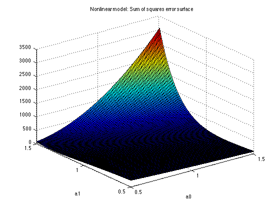 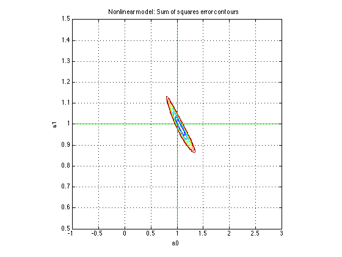
28. Confidence limits on a regression model
%{ There are various things that people think of when the phrase "confidence limits" arises. - We can ask for confidence limits on the regression parameters themselves. This is useful to decide if a model term is statistically significant, if not, we may choose to drop it from a model. - We can ask for confidence limits on the model predictions (yhat) These goals are related of course. They are obtained from the parameter covariance matrix from the regression. (The reference to look at here is again Draper and Smith.) If our regression problem is to solve for x, such that A*x = y, then we can compute the covariance matrix of the parameter vector x by the simple V_x = inv(A'*A)*s2 where s2 is the error variance. Typically the error variance is unknown, so we would use a measure of it from the residuals. s2 = sum((y-yhat).^2)/(n-p); Here n is the number of data points, and p the number of parameters to be estimated. This presumes little or no lack of fit in the model. Of course, significant lack of fit would invalidate any confidence limits of this form. Often only the diagonal of the covariance matrix is used. This provides simple variance estimates for each parameter, assuming independence between the parameters. Large (in absolute value) off-diagonal terms in the covariance matrix will indicate highly correlated parameters. In the event that only the diagonal of the covariance matrix is required, we can compute it without an explicit inverse of A'*A, and in way that is both computationally efficient and as well conditioned as possible. Thus if one solves for the solution to A*x=y using a qr factorization as x = R\(Q*y) then recognize that inv(A'*A) = inv(R'*R) = inv(R)*inv(R') = inv(R)*inv(R)' If we have already computed R, this will be more stable numerically. If A is sparse, the savings will be more dramatic. There is one more step to take however. Since we really want only the diagonal of this matrix, we can get it as: diag(inv(A'*A)) = sum(inv(R).^2,2) %}
% Compare the two approaches on a random matrix. A=rand(10,3); diag(inv(A'*A)) [Q,R]=qr(A,0); sum(inv(R).^2,2) % Note that both gave the same result.
ans =
1.7902
2.4729
1.4398
ans =
1.7902
2.4729
1.4398
% As a test, run 1000 regressions on random data, compare how % many sets of 95% confidence intervals actually contained the % true slope coefficient. m = 1000; % # of runs to verify confidence intervals n = 100; % # of data points % ci will contain the upper and lower limits on the slope % parameter in columns 1 and 2 respectively. ci = zeros(m,2); p = 2; for i=1:m x = randn(n,1); y = 1+2*x + randn(n,1); % solve using \ M = [ones(n,1),x]; coef = M\y; % the residual vector res = M*coef - y; % yes, I'll even be lazy and use inv. M is well conditioned % so there is no fear of numerical problems, and there are % only 2 coefficients to estimate so there is no time issue. s2 = sum(res.^2)/(n-p); sigma = s2*diag(inv(M'*M))'; % a quick excursion into the statistics toolbox to get % the critical value from tinv for 95% limits: % tinv(.975,100) % ans = % 1.9840 ci(i,:) = coef(2) + 1.984*sqrt(sigma(2))*[-1 1]; end % finally, how many of these slope confidence intervals % actually contained the true value (2). In a simulation % with 1000 events, we expect to see roughly 950 cases where % the bounds contained 2. sum((2>=ci(:,1)) & (2<=ci(:,2))) % 950 may not have been too bad a prediction after all.
ans = 931
% Given a complete covariance matrix estimate, we can also compute % uncertainties around any linear combination of the parameters. % Since a linear regression model is linear in the parameters, % confidence limits on the predictions of the model at some point % or set of points are easily enough obtained, since the prediction % at any point is merely a linear combination of the parameters. % An example of confidence limits around the curve on a linear % regression is simple enough to do. n = 10; x = sort(rand(n,1))*2-1; y = 1 + 2*x + 3*x.^2 + randn(n,1); M = [ones(n,1),x,x.^2]; coef = M\y; % Covariance matrix of the parameters yhat = M*coef; s2 = sum((y - yhat).^2)/(n-3); sigma = s2*inv(M'*M) % Predictions at a set of equally spaced points in [0,1]. x0 = linspace(-1,1,101)'; M0 = [ones(101,1),x0,x0.^2]; y0 = M0*coef; V = diag(M0*sigma*M0'); % Use a (2-sided) t-statistic for the intervals at a 95% level % tinv(.975,100) % ans = % 1.9840 tcrit = 1.9840; close all plot(x,y,'ro') hold on plot(x0,y0,'b-') plot(x0,[y0-tcrit*V,y0+tcrit*V],'g-') hold off
sigma =
0.30406 -0.035091 -0.46477
-0.035091 0.22316 0.095191
-0.46477 0.095191 1.0405
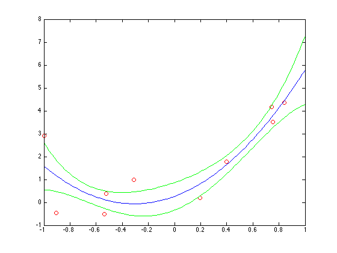 % Equality constraints are easily dealt with, since they can be % removed from the problem (see section 25.) However, active % inequality constraints are a problem! For a confidence limit, % one cannot assume that an active inequality constraint was truly % an equality constraint, since it is permissible to fall any tiny % amount inside the constraint. % % If you have this problem, you may wish to consider the jackknife % or bootstrap procedures.
29. Confidence limits on the parameters in a nonlinear regression
%{ A nonlinear regression is not too different from a linear one. Yes, it is nonlinear. The (approximate) covariance matrix of the parameters is normally derived from a first order Taylor series. Thus, of J is the (nxp) Jacobian matrix at the optimum, where n is the number of data points, and p the number of parameters to estimate, the covariance matrix is just S = s2*inv(J'*J) where s2 is the error variance. See section 27 for a description of how one may avoid some of the problem with inv and forming J'*J, especially if you only wish to compute the diagonals of this matrix. What you do not want to use here is the approximate Hessian matrix returned by an optimizer. These matrices tend to be formed from updates. As such, they are often only approximations to the true Hessian at the optimum, at the very least lagging behind a few iterations. Since they are also built from rank 1 updates to the Hessian, they may lack the proper behavior in some dimensions. (For example, a lucky starting value may allow an optimization to converge in only one iteration. This would also update the returned Hessian approximation in only 1 dimension, so probably a terrible estimate of the true Hessian at that point.) %}
30. Quadprog example, unrounding a curve
%{ A nice, I'll even claim elegant, example of the use of quadprog is the problem of unrounding a vector. Code for this in the form of a function can be found on the file exchange as unround.m http://www.mathworks.com/matlabcentral/fileexchange/loadFile.do?objectId=8719&objectType=FILE Consider a vector composed of some smooth function evaluated at consecutive (equally spaced) values of its independent variable. Then the function values are rounded to the nearest integer. Can we recover the original smooth function values? Clearly we cannot do so exactly for an arbitrary function, but we can attempt to find the smoothest set of function values that are consistent with the given rounded set. We will treat each element of the set as an unknown, so a vector of length n will have n unknowns to solve for. %}
% A simple function of x n=101; x = linspace(0,1,n); v0 = (10*x.^2); % rounded vector vr = round(v0); close plot(x,v0,'r-',x,vr,'bo') title 'Base functional form, with rounding' xlabel 'x' ylabel 'y'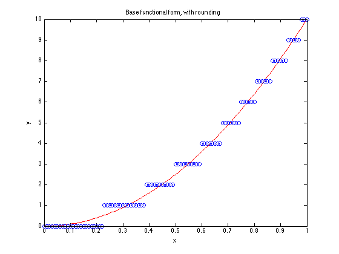
% bound constraints. since vr is composed of all integers, then % the origin, unrounded values must lie within simple bounds % from our rounded set. LB = vr - 0.5; UB = vr + 0.5; % sparse system representing smoothness. Consider any row of S. % When multiplied by the vector of unknowns, it computes a % second order finite difference of the vector around some point. % This, by itself cannot be used in quadprog, because S is not % an appropriate quadratic form. S = spdiags(repmat([1 -2 1],n-2,1),[0 1 2],n-2,n); % H is positive semi-definite. Quadprog will be happy. H = S'*S; f = zeros(n,1); % Solve the quadratic programming problem. Make sure we use the % largescale solver. Note that we have carefully constructed % H to be sparse. The largescale solver will allow simple bound % constraints. As important as the constraints, when LargeScale % is 'on', quadprog can handle quite large problems, numbering % into many thousands of variables. Note that I have supplied H % as a sparse matrix. It is tightly banded. options = optimset('quadprog'); options.LargeScale = 'on'; options.Display = 'final'; vur = quadprog(H,f,[],[],[],[],LB,UB,[],options); plot(x,v0,'r-',x,vr,'bo',x,vur,'k--') legend('Base curve','Rounded data','Un-rounded curve','Location','NorthWest') xlabel 'x' ylabel 'y' % Clearly the two curves overlay quite nicely, only at the ends % do they deviate from each other significantly. That deviation % is related to the behavior of a natural spline, despite the % fact that we never explicitly defined a spline model. In effect, % we minimized the approximate integral of the square of the second % derivative of our function. It is this integral from which cubic % splines are derived.
Optimization terminated: relative function value changing by less than sqrt(OPTIONS.TolFun), no negative curvature detected in current trust region model and the rate of progress (change in f(x)) is slow.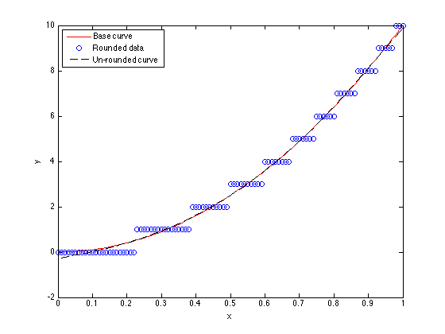
31. R^2
%{ R^2 is a measure of the goodness of fit of a regression model. What does it mean? We can write R^2 in terms of the vectors y (our data) and yhat (our model predictions) as R^2 = 1 - ( norm(yhat-y) / norm(y-mean(y)) )^2 Intuitively, we might describe the term "norm(y-mean(y))" as the total information content of our data. Likewise, the term "norm(yhat-y)" is the amount of signal that remains after removing the predictions of our model. So when the model describes the data perfectly, this ratio will be zero. Squared and subtracted from 1, a perfect fit will yield an R^2 == 1. At the other end of the spectrum, a fit that describes the data no better than does the mean will yield a zero value for R^2. It also suggests that a model with no mean term can produce a negative value for R^2. The implication in the event of a negative R^2 is the model is a poorer predictor of the data than would be a simple mean. Finally, note that the formula above is not specific to a linear regression model. R^2 may apply as well to a nonlinear regression model. When do we use R^2? In the words of Draper & Smith, R^2 is the first thing they might look at when perusing the output of a regression analysis. It is also clearly not the only thing they look at. My point is that R^2 is only one measure of a model. There is no critical value of R^2 such that a model is acceptable. The following pair of examples may help to illustrate this point. %}
% This curve fit will yield an R^2 of roughly 0.975 from my tests. % Is it a poor model? It depends upon how much you need to fit the % subtle curvature in that data. n=25; x = sort(rand(n,1)); y = exp(x/2)+randn(size(x))/30; M = [ones(n,1),x]; coef = M\y; yhat = M*coef; Rsqr = 1 - (norm(yhat-y)/norm(y-mean(y))).^2 close plot(x,y,'bo',x,yhat,'r-') title 'R^2 is approximately 0.975' xlabel x ylabel y % Was the linear model chosen adequate? It depends on your data and % your needs. My personal opinion of the data in this example is % that if I really needed to know the amount of curvature in this % functional relationship, then I needed better data or much more % data.
Rsqr =
0.96576
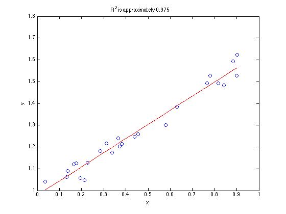 % How about this data? It yields roughly the same value of R^2 as did % the data with a linear model above. n = 25; x = linspace(0,1,n)'; y = x + ((x-.5).^2)*0.6; M = [ones(n,1),x]; coef = M\y; yhat = M*coef; Rsqr = 1 - (norm(yhat-y)/norm(y-mean(y))).^2 plot(x,y,'bo',x,yhat,'r-') title 'R^2 is approximately 0.975' xlabel x ylabel y % Is there any doubt that there is lack of fit in this model? You % may decide that a linear model is not adequate here. That is a % decision that you must make based on your goals for a model.
Rsqr =
0.97478
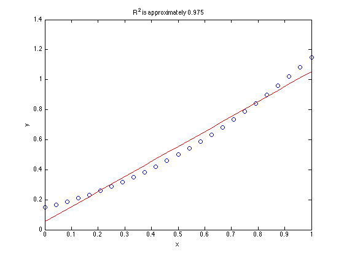 %{ To sum up, the intrepid modeler should look at various statistics about their model, not just R^2. They should look at plots of the model, plots of residuals in various forms. They should consider if lack of fit is present. They should filter all of this information based on their needs and goals for the final model and their knowledge of the system being modeled. %}
32. Estimation of the parameters of an implicit function
%{ How can we estimate the parameters for implicit functions, one simple example might be: y = a*(y - b*x)^2 The simplistic approach is to formulate this as a direct least squares problem for lsqnonlin. y - a*(y - b*x)^2 = 0 Choose values of a and b that drive this expresion towards zero for each data point (x,y). What could be wrong? The problem is the presumption is of additive (normal) error on y. The value of y that is used inside the parens is the "measured" value. Its the true value, plus any error and lack of fit. We will find that if we do try to use lsqnonlin in the way described, we should expect poor results - possibly non-convergence, especially is there are large residuals or your starting values are poor. %}
% Lets start by building ourselves an implicit function that we % can deal with easily. % % y = (y-2*x)^2 % build it from specified values of y n = 20; y = 0.5+5*rand(1,n); % I chose this functional form since I could still find points % on the curve itself easily. x = (y - sqrt(y))/2; % sort it on x for plotting purposes [x,tags]=sort(x); y=y(tags); % Now, lets add some error into the mix. Not too large of % an error. err = randn(1,n)/10; % Added to y ye = y + err; % plot the data close plot(x,y,'-',x,ye,'o')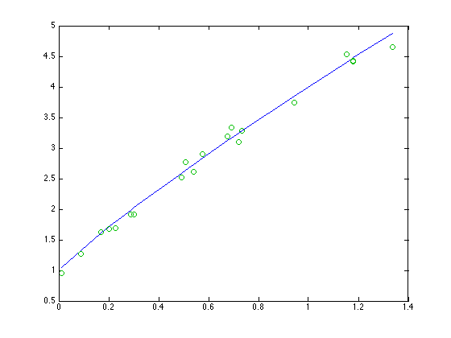
% We need to solve for the model now. In this case I'll % presume the model to be % % y = a*(y - b*x)^2 % % We wish to estimate a and b. Of course, the true values % are [1, 2] for a and b respectively. % First of all, can we just throw lsqnonlin at this implicit % function as described above? fun = @(ab) ye-ab(1)*(ye-ab(2)*x).^2; options = optimset('lsqnonlin'); options.Display = 'iter'; abstart = [1.5 1.5]; lsqnonlin(fun,abstart,[],[],options) % Recall that the true values of a and b were [1,2], so it % did work, although not terribly well. Can we do better?
Norm of First-order
Iteration Func-count f(x) step optimality CG-iterations
0 3 282.538 389
1 6 5.29024 0.637582 33 0
2 9 1.3045 0.173294 0.701 0
3 12 1.30019 0.0152304 0.0111 0
4 15 1.30019 0.000459084 9.64e-05 0
Local minimum possible.
lsqnonlin stopped because the final change in the sum of squares relative to
its initial value is less than the selected value of the function tolerance.
ans =
0.91502 1.8839
% Our data as we know it to be is (x,ye). A good test before % we really start is to see if we can predict the error in y, % given values of a and b. From my random data, here is the % first point. [x(1),y(1),err(1),ye(1)] % First, lets see if we can solve for err(1), given the true % values of a and b. a = 1; b = 2; fun = @(e1) (ye(1)-e1 - a*((ye(1)-e1) - b*x(1)).^2) estart = .1; e = fzero(fun,estart)
ans =
0.010368 1.0411 -0.092022 0.94903
fun =
@(e1)(ye(1)-e1-a*((ye(1)-e1)-b*x(1)).^2)
e =
-0.092022
% This worked nicely. We were able to find the first additive % error to y, given the true values of the parameters. % % Had we chosen different nominal values for a and b, e would have % been different. I'll try it. a = 1.5; b = 1.5; fun = @(e1) (ye(1)-e1 - a*((ye(1)-e1) - b*x(1)).^2) estart = .1; e = fzero(fun,estart)
fun =
@(e1)(ye(1)-e1-a*((ye(1)-e1)-b*x(1)).^2)
e =
0.25161
% We are now ready to put this all into the domain of lsqnonlin. % I won't be able to do this with an anonymous function directly. % I've supplied the function below: % ======================================================== % function epred = implicit_obj(ab,x,ye) % a = ab(1); % b = ab(2); % n = length(ye); % epred = zeros(1,n); % estart = .1; % for i = 1:n % fun = @(ei) (ye(i)-ei - a*((ye(i)-ei) - b*x(i)).^2); % epred(i) = fzero(fun,estart); % end % ======================================================== % Having gone this far, I ALWAYS like to evaluate the objective function % that lsqnonlin will see, especially when its something complicated. % Does it make sense? Try it for a couple of parameter sets. epred=implicit_obj([1.5 1.5],x,ye) epred=implicit_obj([3 1],x,ye)
epred =
Columns 1 through 12
0.25161 0.36019 0.50711 0.48651 0.43184 0.51682 0.48661 0.68123 0.88711 0.66889 0.87634 0.95596
Columns 13 through 20
1.0635 0.76872 0.93183 0.9714 1.3439 1.1849 1.1854 1.117
epred =
Columns 1 through 12
0.59527 0.77791 0.99917 1.0051 0.97256 1.1074 1.0886 1.4313 1.651 1.4562 1.6913 1.8452
Columns 13 through 20
1.964 1.6905 1.8635 2.0507 2.5688 2.4276 2.4292 2.4666
% Time to call lsqnonlin now. I'll pass in the vectors x and ye % via an anonymous call, although there are many ways to do it. % As always, I use 'iter' for the Display parameter to lsqnonlin, % at least the first time I call it. options = optimset('lsqnonlin'); options.Display = 'iter'; ab_start = [1.5 1.5]; ab_est = lsqnonlin(@(ab) implicit_obj(ab,x,ye),ab_start,[],[],options) % These parameter estimates are clearly much better than our % earlier attempt was able to achieve.
Norm of First-order
Iteration Func-count f(x) step optimality CG-iterations
0 3 14.1543 15.6
1 6 1.86249 0.844717 9.87 0
2 9 0.23647 0.167021 1.09 0
3 12 0.196607 0.0400541 0.0382 0
4 15 0.19655 0.00152363 4.61e-05 0
5 18 0.19655 5.37683e-06 4.45e-08 0
Local minimum found.
Optimization completed because the size of the gradient is less than
the selected value of the function tolerance.
ab_est =
1.0359 2.0121
33. Robust fitting schemes
%{ Certainly a very good tool for robust fitting is robustfit from the statistics toolbox. I'll try only to give an idea of how such a scheme works. There are two simple approaches. - Iteratively re-weighted least squares - Nonlinear residual transformations The first of these, iteratively reweighted least squares, is quite simple. We solve a series of weighted least squares problems, where at each iteration we compute the weights from the residuals to our previous fit. Data points with large residuals get a low weight. This method presumes that points with large residuals are outliers, so they are given little weight. %}
% Consider the simple problem n = 100; x = 2*rand(n,1) - 1; y0 = exp(x); % make some noise with a non-gaussian distribution noise = randn(n,1)/2; noise = sign(noise).*abs(noise).^4; y = y0 + noise; % We can wee tht the data is mostly very low noise, but there % are some serious outliers. close all plot(x,y0,'ro',x,y,'b+')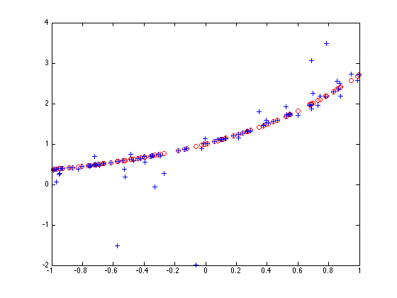
% Fit this curve with a fourth order polynomial model, of the form % % y = a1+a2*x+a3*x^2+a4*x^3+a5*x^4 % % using this fitting scheme. % % As a baseline, use polyfit with no weights. polyfit(x,y0,4) % Remember that the Taylor series for exp(x) would have had its % first few terms as [1/24 1/6 1/2 1 1] % So polyfit did reasonably well in its estimate of the truncated % Taylor series.
ans =
0.043431 0.17648 0.49938 0.99775 1.0001
ans =
0.041667 0.16667 0.5 1 1
% Note how poorly polyfit does on the noisy data.
polyfit(x,y,4)
ans =
-0.66476 -0.17038 1.3211 1.341 0.822
% How would an iteratively reweighted scheme work? % initial weights weights = ones(n,1); % We will use lscov to solve the weighted regressions A = [x.^4,x.^3,x.^2,x,ones(size(x))]; % be lazy and just iterate a few times for i = 1:5 poly = lscov(A,y,weights)' % residuals at the current step resid = polyval(poly,x) - y; % find the maximum residual to scale the problem maxr = max(abs(resid)); % compute the weights for the next iteration. I'll % just pick a shape that dies off to zero for larger % values. There are many shapes to choose from. weights = exp(-(3*resid/maxr).^2); end % This was much closer to our fit with no noise
poly =
-0.66476 -0.17038 1.3211 1.341 0.822
poly =
-0.24319 0.05459 0.7793 1.13 0.95864
poly =
-0.2178 0.069521 0.74722 1.1158 0.96528
poly =
-0.21607 0.070368 0.7451 1.1149 0.96562
poly =
-0.21593 0.070418 0.74494 1.1148 0.96564
% An alternative is to transform the residuals so as to use a general % nonlinear optimization scheme, such as fminsearch. I'll transform % the residuals using a nonlinear transformation that will downweight % the outliers, then form the sum of squares of the result. % The transformation function Wfun = @(R) erf(R); % fminsearch objective obj = @(c) sum(Wfun(y-polyval(c,x)).^2); % Again, this estimation was less sensitive to the very non-normal % noise structure of our data than the simple linear least squares. poly = fminsearch(obj,[1 1 1 1 1])
poly =
-0.19347 0.08019 0.71935 1.1043 0.96915
34. Homotopies
%{ Homotopies are an alternative solution for solving hard nonlinear problems. This book was a good reference as I recall, though it appears to be out of print. Garcia and Zangwill, "Pathways to Solutions, Fixed Points and Equilibria", Prentice Hall Think of a homotopy as a continuous transformation from a simple problem that you know how to solve to a hard problem that you cannot solve. For example, suppose we did not know how to solve for x, given a value of y0 here: y0 = exp(x) Yes, I'm sure that with only a few hours of work I can figure out how to use logs. But lets pretend for the moment that this is really a hard problem. I'll formulate the homotopy as H(x,t) = (y0 - exp(x))*t + (y0 - (1+x))*(1-t) So when t = 0, the problem reduces to H(x,0) = y0 - (1+x) This is a problem that we know the root of very well. I used a first order Taylor series approximation to the exponential function. So the root for t=0 is simple to find. It occurs at x = y0 - 1 As we move from t=0 to t=1, the problem deforms continuously into the more nonlinear one of our goal. At each step, the starting value comes from our last step. If we take reasonably small steps, each successive problem is quickly solved, even if we did not know of a good starting value for the hard problem initially. Lets try it out for our problem, in a rather brute force way. %}
% Define the homotopy function H = @(x,t,y0) (y0-exp(x))*t + (y0-(1+x))*(1-t); y0 = 5; % We hope to converge to the solution at % % log(5) == 1.6094379124341 format long g x_t_initial = 0; for t = 0:.1:1 x_t = fzero(@(x) H(x,t,y0),x_t_initial); disp([t,x_t_initial,x_t]) x_t_initial = x_t; end % The final step got us where we wanted to go. Note that each % individual step was an easy problem to solve. In fact, the first % step at t=0 had a purely linear objective function. log(5)
0 0 4
0.1 4 2.77445566618553
0.2 2.77445566618553 2.42485429971165
0.3 2.42485429971165 2.21531235509992
0.4 2.21531235509992 2.06683146765626
0.5 2.06683146765626 1.9526514534024
0.6 1.9526514534024 1.86041314249102
0.7 1.86041314249102 1.78338733021851
0.8 1.78338733021851 1.71750694425659
0.9 1.71750694425659 1.66012831622162
1 1.66012831622162 1.6094379124341
ans =
1.6094379124341
% Look at how the homotopic family of functions deforms from our % simple linear one to the more nonlinear one at the end. close all figure for t = 0:.1:1 fplot(@(x) H(x,t,y0),[0,4]) hold on end grid on hold off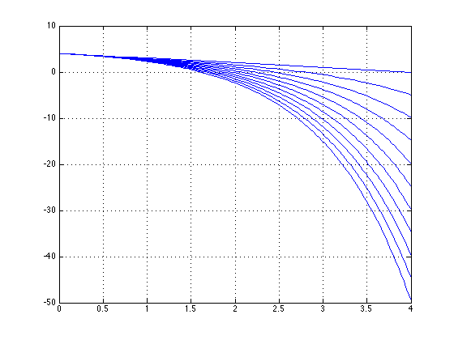
% This was admittedly a very crude example. You can even formulate % a homotopy solution that generates the multiple solutions to problem. % % Consider the problem % % sin(x) - x/5 = 0 % % We wish to find all solutions to this problem. Formulate a homotopy % function as % % H(x,t) = (sin(x) - x/5) - (1-t)*(sin(x0)-x0/5) % % Where x0 is our starting point. Choose x0 = -6. % % Note that at (x,t) = (x0,0), that H is trivially zero. Also, at % t = 1, H(x,t) is zero if x is a solution to our original problem. % % We could also have used a different homotopy. % % H(x,t) = t*(sin(x) - x/5) - (1-t)*(x-x0) x0 = -10; H = @(x,t) (sin(x) - x/5) - (1-t).*(sin(x0)-x0/5); % Generate a grid in (x,t) [x,t] = meshgrid(-10:.1:10,0:.01:1); % The solutions to sin(x) - x/5 will occur along a path (x(p),t(p)) % whenever t = 1. Solve for that path using a contour plot. contour(x,t,H(x,t),[0 0]) grid on xlabel 'x(p)' ylabel 't(p)'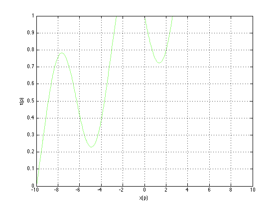
% One can also formulate a differential equation to be solved % for the homotopy path. % % H = @(x,t) (sin(x) - x/5) - (1-t).*(sin(x0)-x0/5); x0 = -10; % The Jacobian matrix dHdx = @(x,t) cos(x) - 1/5; dHdt = @(x,t) sin(x0) - x0/5; % Basic differential equations (see Garcia & Zangwill) fun = @(p,xt) [dHdt(xt(1),xt(2));-dHdx(xt(1),xt(2))]; % Solve using an ode solver solution = ode15s(fun,[0,6],[x0;0]); % This curve is the same as that generated by the contour plot above. % Note that we can find the roots of our original function by % interpolating this curve to find where it crosses t==1. plot(solution.y(1,:),solution.y(2,:)) hold on plot([min(solution.y(1,:)),max(solution.y(1,:))],[1 1],'r-') hold off grid on % These examples are just a start on how one can use homotopies to % solve problems.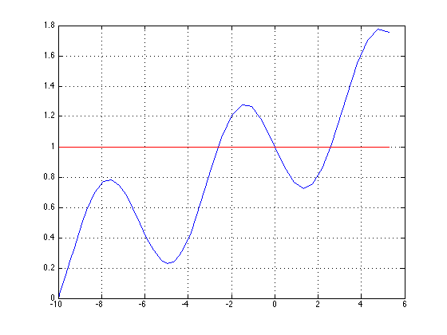
35. Orthogonal polynomial regression
%{ Orthogonal polynomials are often used in mathematical modelling. Can they be used for regression models? (Of course.) Are they of value? (Of course.) This section will concentrate on one narrow aspect of these polynomials - orthogonality. Consider the first few Legendre orthogonal polynomials. We can find a list of them in books like Abramowitz and Stegun, "Handbook of Mathematical functions", Table 22.9. P0(x) = 1 P1(x) = x P2(x) = 3/2*x.^2 - 1/2 P3(x) = 5/2*x.^3 - 3/2*x P4(x) = 4.375*x.^4 - 3.75*x.^2 + 3/8 P5(x) = 7.875*x.^5 - 8.75*x.^3 + 1.875*x ... These polynomials have the property that over the interval [-1,1], they are orthogonal. Thus, the integral over that interval of the product of two such polynomials Pi and Pj will be zero whenever i and j are not equal. Whenever i == j, the corresponding integral will evaluate to 1. However, the mere use of orthogonal polynomials on discrete data will not generally result in orthogonality in the linear algebra. For example ... %} % We can ortho-normalize the polynomials above by multiplying % the i'th polynomial by sqrt((2*i+1)/2) P0 = @(x) ones(size(x))*sqrt(1/2); P1 = @(x) x*sqrt(3/2); P2 = @(x) (3/2*x.^2 - 1/2)*sqrt(5/2); P3 = @(x) (5/2*x.^3 - 3/2*x)*sqrt(7/2); P4 = @(x) (3/8 - 3.75*x.^2 + 4.375*x.^4)*sqrt(9/2); P5 = @(x) (1.875*x - 8.75*x.^3 + 7.875*x.^5)*sqrt(11/2); % Thus if we integrate over the proper domain, this one should % return zero (to within the tolerance set by quad): quad(@(x) P1(x).*P4(x),-1,1)
ans =
2.77555756156289e-17
% But this integral should return unity:
quad(@(x) P3(x).*P3(x),-1,1)
ans =
1.00000001736801
% Now, lets look at what will happen in a regression context. % Consider an equally spaced vector of points x0 = (-1:.001:1)'; % Do these polynomials behave as orthogonal functions when % evaluated over a discrete set of points? NO. A = [P0(x0),P1(x0),P2(x0),P3(x0),P4(x0),P5(x0)]; % Note that the matrix A'*A should be a multiple of an identity % matrix if the polynomials are orthogonal on discrete data. Here we % see that A'*A is close to an identity matrix. A'*A
ans =
1000.5 -9.2370555648813e-14 1.11859300574424 7.105427357601e-15 1.50249999956248 -7.105427357601e-15
-9.2370555648813e-14 1001.5005 -7.105427357601e-14 2.29396101625142 -1.4210854715202e-14 2.87994073426673
1.11859300574424 -7.105427357601e-14 1002.50249999963 5.6843418860808e-14 3.3613691815863 -2.8421709430404e-14
7.105427357601e-15 2.29396101625142 5.6843418860808e-14 1003.50699999446 0 4.4028383448115
1.50249999956248 -1.4210854715202e-14 3.3613691815863 0 1004.51499996362 5.6843418860808e-14
-7.105427357601e-15 2.87994073426673 -2.8421709430404e-14 4.4028383448115 5.6843418860808e-14 1005.52749984279
% An interesting thing to try is this same operation on a carefully % selected set of points (see Engels, "Numerical Quadrature and Cubature", % Academic Press, 1980, Table 2.4.3, page 58.) x = [0.16790618421480394; 0.52876178305787999;... 0.60101865538023807; 0.91158930772843447]; x = [-x;0;x]; A = [P0(x),P1(x),P2(x),P3(x),P4(x),P5(x)]; % This time, A'*A has all (essentially) zero off-diagonal terms, % reflecting the use of a set of quadrature nodes for the sample points. A'*A % The point to take from this excursion is that orthogonal polyomials % are not always orthogonal when sampled at dscrete points.
ans =
4.5 -1.11022302462516e-16 -3.33066907387547e-16 1.11022302462516e-16 -1.11022302462516e-16 4.16333634234434e-17
-1.11022302462516e-16 4.5 0 6.66133814775094e-16 -1.11022302462516e-16 -1.13797860024079e-15
-3.33066907387547e-16 0 4.5 0 -1.11022302462516e-16 -4.16333634234434e-17
1.11022302462516e-16 6.66133814775094e-16 0 4.5 1.11022302462516e-16 1.11022302462516e-16
-1.11022302462516e-16 -1.11022302462516e-16 -1.11022302462516e-16 1.11022302462516e-16 4.5 -8.32667268468867e-17
4.16333634234434e-17 -1.13797860024079e-15 -4.16333634234434e-17 1.11022302462516e-16 -8.32667268468867e-17 1.11544189453125
36. Potential topics to be added or expanded in the (near) future
%{ I've realized I may never finish writing this document. There will always be segments I'd like to add, expound upon, clarify. So periodically I will repost my current version of the doc, with the expectation that I will add the pieces below as the muse strikes me. My current planned additions are: - Scaling problems - identifying and fixing them - More discussion on singular matrix warnings - Multi-criteria optimization - Using output functions - List of references - Jackknife/Bootstrap examples for confidence intervals on a regression %} close all